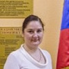

Дошкольное отделение школы № 1959
В 2015 году 49% первоклассников Школы № 1959 пришли из дошкольного отделения.
- Перервинский бульвар, 16к2
- Перервинский бульвар, 16к1
Воспитатели
Воспитатели, которых чаще всего благодарят родители (отзывы и профили сотрудников взяты с официального сайта школы):|
Воспитатель
Копытова Татьяна Михайловна
5 благодарностей |
Воспитатель
Кунц Анна Николаевна
2 благодарности |
Воспитатель
Султанова Дарья Владимировна
1 благодарность |
 Помощник воспитателя
Гуркова Елена Николаевна
Помощник воспитателя
Гуркова Елена Николаевна
1 благодарность |
|
Воспитатель
Сенькина Мария Викторовна
1 благодарность |

Воспитатель
Губанова Ирина Махсутовна
1 благодарность |
Психолог
Чернякова Дарья Евгеньевна
1 благодарность |
Воспитатель
Антонова Елена Викторовна
1 благодарность |
Отзывы
Данные собраны c официального сайта школы и через форму для отзывов.
Хотим выразить огромную благодарность нашим бесценным воспитателям: Мамедовой Алле Геннадьевне, Громовой Елене Николаевне и нашей замечательной нянечке Татьяне Михайловне! Спасибо вам, за всё! За терпение, за любовь и заботу который вы окружали наших деток.
Вложенный файл
Вложенный файл
Хочу выразить благодарность воспитателям второй младшей группы "Улыбка": Кунц Анне Николаевне, Султановой Д.В., Сенькиной М.В. и музыкальному работнику за замечательный праздник, посвященный 8 Марта. Исполненные детьми стихи, песни и танцы, доброжелательность и профессионализм ведущей Анны Николаевны доставили огромное удовольствие всем участникам праздника - мамам,папам, бабушкам, дедушкам и самим детям! Огромное спасибо!)))
Я хочу поблагодарить сад "УЛЫБКА", а лично психологов Татьяну Юрьевну и Дарью Евгеньевну за проведенный благотворительный мастер-класс для родителей по декупажу новогодней игрушки. Это просто волшебство: своими руками наклеить на деревянные заготовки рисунки с салфеток, эти рисунки дополнить красками, блестящими контурами, получались настоящие красивые новогодние игрушки (елочки, снежинки, колокольчики). На этом же мастер-классе можно было выполнить декупаж свечи. И еще, что чудесно: все игрушки будут переданы на благотворительную ярмарку при храме. Я уже три-четыре года мечтала вообще попробовать, что это такое. И когда в стенде объявлений я увидела возможность посетить такой мастер-класс, я ждала день когда он наступит))). Я мама двух маленьких детишек 3,5 и 2 лет, для меня это праздник рукоделия в приятной атмосфере. Я так отдохнула и воодушевилась, что теперь хочу домашних порадовать такими игрушками, дома летаю как пчелка, разрисовала окна как в саду, сегодня поставила елку. СПАСИБО ВАМ ОГРОМНОЕ!
Уважаемые и любимые воспитатели и все сотрудники детского сада "Сказка"! Уважаемая Ирина Валентиновна! Поздравляем всех Вас с Днем работников дошкольного образования!!! Сегодня – Ваш праздник, и в этот день от души хотим Вам пожелать огромного счастья, здоровья, благополучия и радости, а так же любви, доброты, хорошего настроения! Пусть дни Ваши наполнятся таким же светом, каким Вы одаривали ежедневно и ежечасно наших детей на протяжении нескольких лет! Вы замечательные!!! Отдельный большой привет Липской Татьяне Владимировне, Колобуховой Анастасии Александровне, нашим первым воспитателям - Елене Викторовне и Мигрихан Рамазановне. и инструктору по физической культуре Ольге Владимировне. Мы Вас всех помним и любим!!!
.
Выпуск 2015 года, группа "Радуга".
.
Выпуск 2015 года, группа "Радуга".
Добрый день! Хочеться выразить благодарность воспитателям нашей группы "Капитошка": Алле Геннадеевне и Елене Николаевне, а так же нашей чудесной няне Татьяне Михайловне! Спасибо Вам, за ваш труд и заботу! В Нашей группе очень уютно нашим детям, очень добрая и домашняя атмосфера! Педагоги чуткие, заботливые, сердечные! И, вообще, весь педагогический состав в нашем саду высокопрофессиональный! Какие замечательные праздники, спортивные мероприятия!!! Отдельное спасибо, театральной труппе нашего сада за прекрасные спектакли. Таких представлений не увидишь не в одном известном театре!!! Мой ребенок в следующим году идет уже в подготовительную группу и очень жаль! Не хочется расставаться!!! А за всем этим стоит Замечательный руководитель: Ирина Валентиновна Кобыленко, которая сумела, не только собрать вокруг себя такую профессиональную команду, но и удержать!!!
Ирина Валентиновна! Большое спасибо за организацию фотосессии! Вчера получили замечательные, высоко-художественные портреты и фотографии! Очень довольны! И словами не описать, какая красота!
Спасибо от всех родителей группы "Капитошка"!
Так держать! А мы поможем, чем сможем!
Ирина Валентиновна! Большое спасибо за организацию фотосессии! Вчера получили замечательные, высоко-художественные портреты и фотографии! Очень довольны! И словами не описать, какая красота!
Спасибо от всех родителей группы "Капитошка"!
Так держать! А мы поможем, чем сможем!
Хотелось бы поделиться своими впечатлениями о садике.
Каждое утро в детском саду детей ждет теплая, уютная обстановка. При входе в группу детей и родителей встречает заботливый и внимательный воспитатель, который всегда вежлив и приветлив. Между родителями и воспитателем существует обратная связь. Наш воспитатель Губанова Ирина Махсутовна. рассказывают о талантах и интересах детей, которые необходимо развивать. Особо хочется отметить объем и разнообразие творческих занятий в группе. Здесь нет отбора по принципу: талантлив или нет. Всех детей учат создавать «шедевры творчества». На стенде в холле группы вывешиваются работы наших детей, выставляются детские поделки. Дети получают необходимые знания и развитие, потом удивляют родителей дома своими способностями.
Можно высоко оценить работу воспитателя, музыкальных работников и инструкторов по физическому воспитанию. Именно они устраивают для наших малышей великолепные праздники, которые очень долго остаются в памяти. Наши дети разучивают стихи, песни, танцы, учатся выступать на публике, а это очень важно в современном мире.
Нам бы хотелось сказать спасибо всем работникам детского сада за благоприятную обстановку для наших детей, окруженных заботой и вниманием
Каждое утро в детском саду детей ждет теплая, уютная обстановка. При входе в группу детей и родителей встречает заботливый и внимательный воспитатель, который всегда вежлив и приветлив. Между родителями и воспитателем существует обратная связь. Наш воспитатель Губанова Ирина Махсутовна. рассказывают о талантах и интересах детей, которые необходимо развивать. Особо хочется отметить объем и разнообразие творческих занятий в группе. Здесь нет отбора по принципу: талантлив или нет. Всех детей учат создавать «шедевры творчества». На стенде в холле группы вывешиваются работы наших детей, выставляются детские поделки. Дети получают необходимые знания и развитие, потом удивляют родителей дома своими способностями.
Можно высоко оценить работу воспитателя, музыкальных работников и инструкторов по физическому воспитанию. Именно они устраивают для наших малышей великолепные праздники, которые очень долго остаются в памяти. Наши дети разучивают стихи, песни, танцы, учатся выступать на публике, а это очень важно в современном мире.
Нам бы хотелось сказать спасибо всем работникам детского сада за благоприятную обстановку для наших детей, окруженных заботой и вниманием
Если вы нашли ошибку или неточность, пожалуйста, сообщите нам об этом.
Ученик, выпускник или родитель? Оставьте отзыв о детском саде.